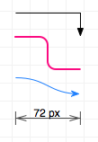

Linee

Le linee possono creare delle associazioni logiche tra gli oggetti. Per creare le linee, devi utilizzare lo strumento Linea. Ogni linea ha una direzione; parte da un'origine e arriva a una destinazione, passando attraverso i punti intermedi lungo il percorso.
Ricorda che puoi anche utilizzare le linee senza collegarle a nient'altro. Per evitare che una linea cerchi di collegarsi agli oggetti, selezionala e utilizza l'impostazione Connessioni per disabilitare i collegamenti.